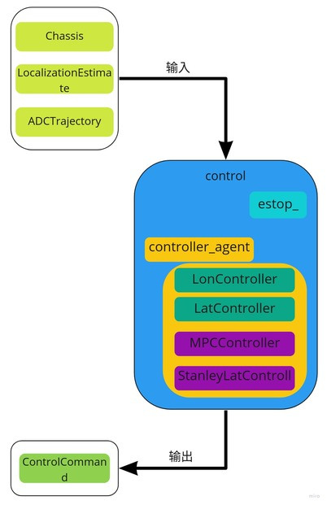
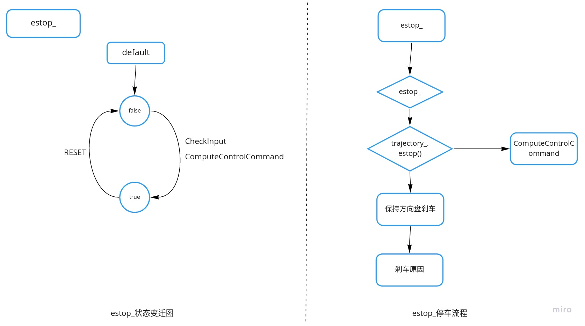
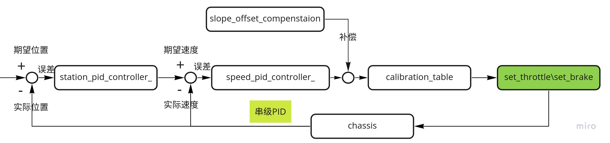

Dig into Apollo - Control  ¶
¶
岁不寒，无以知松柏；事不难，无以知君子。
Table of Contents¶
Control模块简介
Control模块主流程
控制器注册
Pad消息
estop_标志位
控制器
LonController控制器
校准表
PID参数调节
LatController控制器
MPCController控制器
StanleyLatController控制器
Reference
Control模块简介¶
Apollo控制模块的逻辑相对比较简单，控制模块的作用是根据规划(planning模块)生成的轨迹，计算出汽车的油门，刹车和方向盘信号，控制汽车按照规定的轨迹行驶。采用的方法是根据汽车动力和运动学的知识，对汽车进行建模，实现对汽车的控制。目前apollo主要用到了2种控制方式：PID控制和模型控制。
首先我们需要搞清楚control模块的输入是什么，输出是什么？

可以看到control模块：
输入 - Chassis(车辆状态信息), LocalizationEstimate(位置信息), ADCTrajectory(planning模块规划的轨迹)
输出 - ControlCommand(油门，刹车，方向盘)
Control模块的目录结构如下：
├── BUILD // bazel编译文件
├── common // PID和控制器的具体实现 --- 算法具体实现
├── conf // 配置文件 --- 配置文件
├── control_component.cc // 模块入口
├── control_component.h
├── control_component_test.cc
├── controller // 控制器 --- 具体的控制器实现
├── dag // dag依赖
├── integration_tests // 测试
├── launch // launch加载
├── proto // protobuf文件，主要是各个控制器的配置数据结构
├── testdata // 测试数据
└── tools // 工具类
下面我们接着分析下control模块的执行流程。
Control模块主流程¶
Control模块的入口在”control_component.cc”中，和其它的模块一样，Control模块注册为cyber的一个模块，其中control模块为定时模块，也就是每隔10ms执行一次命令。这里需要注意了planning模块的输出是100ms一次，也就是说100ms才给出一条曲线，而control模块会根据这条曲线，每10ms处理一次，控制汽车按照指定的速度到达指定的位置。
Control模块执行的主函数是”ControlComponent::Proc()”，即每10ms调用一次该函数，处理的流程在该函数中：
bool ControlComponent::Proc() {
// 1. 读取输入数据，通过拷贝读取输入信息
chassis_reader_->Observe();
const auto &chassis_msg = chassis_reader_->GetLatestObserved();
if (chassis_msg == nullptr) {
AERROR << "Chassis msg is not ready!";
return false;
}
OnChassis(chassis_msg);
...
const auto &trajectory_msg = trajectory_reader_->GetLatestObserved();
...
const auto &localization_msg = localization_reader_->GetLatestObserved();
ControlCommand control_command;
// 2. 生成控制命令
Status status = ProduceControlCommand(&control_command);
...
common::util::FillHeader(node_->Name(), &control_command);
// 3. 发送控制命令
control_cmd_writer_->Write(std::make_shared<ControlCommand>(control_command));
return true;
}
上述的流程大概分为3个阶段：
读取输入数据
生成控制命令
发送控制命令
生成控制命令的核心函数在”ProduceControlCommand”中，其实这个函数还包含了参数检查和_estop(紧急情况)的处理，真正生成命令的函数只有一行:
Status status_compute = controller_agent_.ComputeControlCommand(
&local_view_.localization, &local_view_.chassis,
&local_view_.trajectory, control_command);
控制器注册¶
上述过程是通过”controller_agent_”产生控制命令，而”controller_agent_”是一个代理，其它的控制器通过注册到代理控制器，从而实现多个控制器的访问（是否用到了设计模式的代理模式？）：

其中控制器包括：
纵向控制
横向控制
模型预测控制
Stanley横向控制
Stanley横向控制可以参考
那么这些控制器是如何注册到”controller_agent_”的呢？
// 1. 在ControlComponent::Init()中调用初始化
bool ControlComponent::Init() {
// 注册控制器
if (!controller_agent_.Init(&control_conf_).ok()) {
monitor_logger_buffer_.ERROR("Control init controller failed! Stopping...");
return false;
}
}
// 2. 在ControllerAgent类中注册和初始化
Status ControllerAgent::Init(const ControlConf *control_conf) {
// 注册控制器
RegisterControllers(control_conf);
// 实例化控制器
CHECK(InitializeConf(control_conf).ok()) << "Fail to initialize config.";
// 控制器初始化
for (auto &controller : controller_list_) {
if (controller == NULL || !controller->Init(control_conf_).ok()) {
if (controller != NULL) {
AERROR << "Controller <" << controller->Name() << "> init failed!";
return Status(ErrorCode::CONTROL_INIT_ERROR,
"Failed to init Controller:" + controller->Name());
} else {
return Status(ErrorCode::CONTROL_INIT_ERROR,
"Failed to init Controller");
}
}
AINFO << "Controller <" << controller->Name() << "> init done!";
}
return Status::OK();
}
上面就是control模块的主流程，我们接下来先介绍下control模块中的”pad message”和”estop_”，然后再逐个介绍各个控制器。
Pad消息¶
Pad消息通过发送状态来控制汽车的模式（自动驾驶还是人工驾驶），其中”DrivingAction”一共有3种状态，在”pad_msg.proto”中:
enum DrivingAction {
STOP = 0;
START = 1;
RESET = 2;
};
Control模块中只能使用pad消息”RESET”来清空”estop_”的状态。实际上control模块会判断”driving_mode”来决定是否启动自动驾驶，而”driving_mode”是通过发送pad消息状态给”canbus”模块来控制的，这会在canbus模块中详细介绍。
总之pad消息的2个作用是:
发送消息给canbus模块，来控制driving_mode，control模块判断当前driving_mode的状态来决定是否启动自动驾驶
通过reset来清空estop_的状态
estop_标志位¶
那么”estop_”有什么作用呢? estop_标志位的作用是判断control模块是否处于紧急状态，而触发紧急停车。那么在哪些状态下，”estop_”为真，汽车进入紧急停车状态呢？
输入错误(CheckInput返回false)
控制命令计算失败(ComputeControlCommand失败)
planning模块直接给出紧急停车
下面是”estop_”的状态变迁图和紧急停车流程:

紧急停车的流程很好理解，我们学驾照的时候都知道，紧急停车的时候不能够狂打方向盘，特别是高速的时候，容易侧翻，因此这里的紧急停车流程也是保持方向盘，然后紧急制动。
控制器¶
首先我们把汽车的控制分为横向控制和纵向控制2部分，其中纵向控制通过油门和刹车控制车纵向的加减速，而横向控制则通过控制方向盘的转动来控制前轮的方向，从而控制汽车的行驶方向。
LonController控制器¶
纵向控制器，主要是通过油门和刹车控制车的纵向速度。汽车的纵向模型比较简单，我们可以通过经典力学对汽车进行建模，汽车的纵向受力如果是前轮驱动，那么前轮提供一个向前的滚动摩擦，后轮有一个滚动摩擦阻力再加上风阻，如果有坡度则再加上重力分量，这就构成了汽车的纵向受力模型：

纵向控制要实现的目标是让汽车在指定的时间内到达指定的地点，首先是保证位置准确，如果能够直接通过油门去控制汽车的位置，那么采用单一的PID环就够了。重点是位置是和速度与时间相关的，因此先通过位置PID得到需要的速度，然后再通过速度PID得到需要多大油门，这样的方式叫做串级PID控制器。通过2级PID来控制汽车的速度，从而确定需要踩多少的油门。
现在自动驾驶普遍是电动汽车的情况下，汽车的动力实际上由内燃机换成了电动马达，这种控制方式完全可以由伺服控制器来解决，传统的伺服控制器实现了位置控制，速度控制，可以把汽车的控制模块直接由伺服控制器来替代（也许可以解放汽车的控制，如果是线性的电机，那么其实很好办，油门可以直接对应为电机的电流，而电流对应电机输出的扭矩大小），但汽车有个最大的不同点是后退需要换倒车档。
下面是串级PID的示意图，其中先根据位置误差得到速度，然后根据速度误差得到油门和刹车，同时在汽车有俯仰角度（汽车行驶在有坡度的路面上）这时候会对PID提供重力分量的补偿：

校准表¶
知道速度之后我们可以根据当前速度的误差，来确定是增大油门或者是刹车，而油门和速度的关系是如何对应的呢，举个例子：当你发现车的速度和预期相差为3km/h，你应该踩多大油门呢？当然你可以先假设一个值，比如油门增加2，如果速度低了你再增加到3，总之根据一个经验值，然后再通过PID算法去调节，那怎么去拟合速度和油门的关系曲线呢？
我们需要控制汽车到达某个速度，根据牛顿经典力学，只需要知道汽车的初速度和加速度，就可以知道物体一段时候后的速度。因此我们只要找到速度，加速度和油门的关系，就可以通过控制汽车的加速度来让汽车达到某个速度。也就是对速度加速度和油门的关系进行建模，得到它们之间的关系。Apollo采用的是在实际的汽车行驶过程中记录不同速度下，不同的油门值对汽车的加速度的影响，从而得到一张表格，最后通过查表的方式来得到具体的油门和刹车值大小，得到的配置最后保存在conf文件夹中。

这个表的生成需要测试每种油门以及每种速度下的表现，但是表不可能列出无限连续的数据，因此最后还是需要通过插值的方式来得到结果。
PID参数调节¶
什么样的PID参数比较合适？这一部分可以参考WIKI百科的PID参数动画。调试参数的方法是先调节速度环，再调节位置环；先调节比例系数，再调节积分系数。

另外关于PID的控制，正常情况下没有问题，如果遇到路面不平的情况，相当于一张巨大的手在拨弄小车，这样就对PID引入了一个震荡反馈，震荡的引入之后系统是否能够保持稳态呢，这就是PID控制需要研究的范围？？？
LatController控制器¶
纵向控制主要是控制速度，而横向控制主要是控制方向。方向盘的角度不一样，车的行驶路径不一样，因此汽车的横向控制主要是通过控制方向盘的转角来控制汽车行驶的角度。
纵向控制采用的是LQR控制器，为什么不继续采用PID控制器呢？因为每种控制器都有它的适合情况和不适合情况（有一篇文章专门介绍了不同的控制器的优劣，PID主要的缺点是不适合泊车和曲率比较大的情况）。关于LQR控制器主要是一些公式的推导，后面再详细介绍下推导过程。
MPCController控制器¶
模型预测控制(MPC)是一类特殊的控制。它的当前控制动作是在每一个采样瞬间通过求解一个有限时域开环最优控制问题而获得。过程的当前状态作为最优控制问题的初始状态，解得的最优控制序列只实施第一个控制作用。这是它与那些使用预先计算控制律的算法的最大不同。本质上模型预测控制求解一个开环最优控制问题。它的思想与具体的模型无关，但是实现则与模型有关。
StanleyLatController控制器¶
问题¶
遇到上坡\下坡的情况，原来的系数表就只能提供一个参考，如何提供补偿，PID的每次输入都是从表中查询还是根据调节的结果来的？
遇到下雨的时候，路面的摩擦系数改变和上述问题一样
遇到长下坡，PID调节是否会和人一样“不能长时间踩脚踏板”
转弯的场景是否适合这个参数？
是否所有的场景都适合这个参数？比如自主泊车的情况？
提供的是TrajectoryPoint，里面包含距离，速度，加速度和时间，这3者只要知道2者即可以了。控制的时候如何选择的颗粒度？比如提供的轨迹的时间间隔是否固定，是否每次都需要control模块自己调节（在时间间隔比较长的情况下），PID每次只能参考一个标准，这里是以距离为准，还是已速度为准？如果是，速度还有何意义？planning生成的TrajectoryPoint是否符合物理学规律？